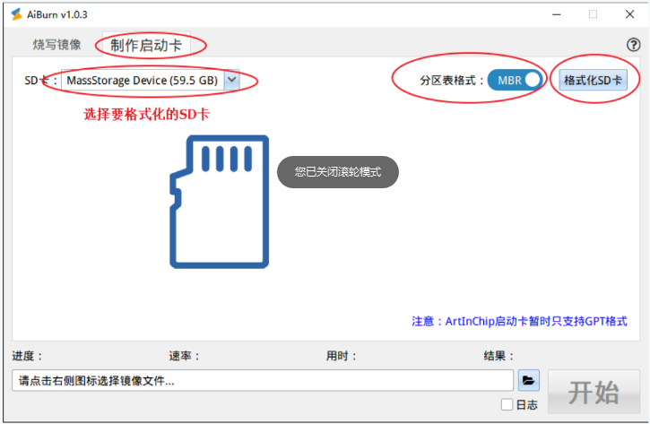

常见问题
23 Dec 2024
Read time: 2 minute(s)
SD 卡初始化失败
现象
启动后，SDMC 驱动初始化完成，但是 mount SD 卡时报错。
[I] aic_sdmc_probe()571 SDMC1 driver loaded Reboot action: Worm-Reset, reason: Extend-Reset Startup time: 50.556 sec (from Power-On-Reset) 01-01 08:59:23 I/SDIO: SD card capacity 30547968 KB. 01-01 08:59:23 I/SDMC: SDMC1 BW 1, sclk 50400 KHz, clk 25000 KHz(25200 KHz), div 1-1 [I] aic_sdmc_set_iocfg()423 SDMC1 Buswidth 4, DDR mode 0, Current clock: 25000 KHz found part[0], begin: 512, size: 4194303.1023 GB # 关键信息 01-01 08:59:23 I/SDIO: try to mount file system! can't find device:sd0p0 to be mounted. 01-01 08:59:23 I/SDIO: try to mount file system! 01-01 08:59:23 E/DFS: mount fs[elm] device[sd0] to / failed.
原因分析
SD 卡采用了 GPT（GUID Partition Table）格式的分区表，而 RT-Thread 的 FatFS 目前只支持 MBR（Master Boot Record）格式的分区表。
在关键信息
foundpart[0],begin:512,size:4194303.1023GB 之前，扫描到 SD 卡容量是
32 GB：30547968KB, 容量和上面的分区 0 大小不符。
解决方案
备份好 SD 卡的数据后，以管理员身份 运行 AiBurn，在“格式化 SD 卡” 处选择 MBR 分区表格式：

U 盘和 SD 卡不能同时挂载
现象
配置好 U 盘挂载功能和 SD 卡挂载功能，单独插入 U 盘或 SD 卡，可正常使用，同时插入后，无法同时使用。
原因分析
SDK 默认配置中，对于文件系统挂载的数量和类型做了限制以节约资源。 通常情况下,进入 menuconfig 配置菜单修改如下两个 DFS 的配置即可同时挂载 U 盘和 SD 卡。
数量及类型
Rt-Thread options --->
RT-Thread Components --->
[*] DFS: device virtual file system --->
(16) The maximal number of mounted file system
(8) The maximal number of file system type
卷数量
Rt-Thread options --->
RT-Thread Components --->
[*] DFS: device virtual file system --->
[*] Enable elm-chan fatfs
elm-chan's FatFs, Generic FAT Filesystem Module --->
(8) Number of volumes (logical drives) to be used.